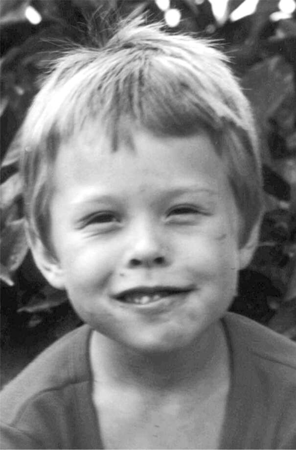

LỜI NÓI ĐẦU
Với bất kỳ ai tôi đã xúc phạm, tôi chỉ muốn nói, tôi đã tái tạo ô tô điện và tôi đang đưa mọi người lên Sao Hỏa bằng tên lửa. Bạn có nghĩ rằng tôi cũng sẽ là một gã bình thường, dễ chịu không?
—Elon Musk, Saturday Night Live, 08/05/2021
Những người đủ điên rồ để nghĩ rằng họ có thể thay đổi thế giới là những người làm được điều đó.
—Steve Jobs
*
LỜI NÓI ĐẦU
Nàng thơ của Lửa

Sân chơi
Lớn lên ở Nam Phi, Elon Musk đã trải qua nhiều đau đớn và học cách vượt qua nó.
Hồi mười hai tuổi, cậu bé được đưa bằng xe buýt đến một trại sinh tồn hoang dã, gọi là veldskool. “Nó giống như một phiên bản quân sự hóa của Chúa Ruồi,” anh nhớ lại. Mỗi đứa trẻ được phát một ít thức ăn và nước uống, và chúng được phép – thực sự là được khuyến khích – tranh giành nhau. “Bắt nạt được coi là một đức tính tốt,” Kimbal, em trai anh, nói. Những đứa trẻ lớn nhanh chóng học được cách đấm vào mặt những đứa nhỏ hơn và cướp đồ của chúng. Elon, nhỏ con và vụng về trong giao tiếp, bị đánh đập hai lần. Cậu sụt mất bốn cân rưỡi.
Gần cuối tuần đầu tiên, bọn trẻ được chia thành hai nhóm và được bảo tấn công lẫn nhau. “Thật điên rồ, không thể tin nổi,” Musk nhớ lại. Cứ vài năm, lại có một đứa trẻ chết. Các huấn luyện viên kể lại những câu chuyện như vậy để cảnh báo. “Đừng ngu ngốc như thằng ngu đã chết năm ngoái,” họ nói. “Đừng làm kẻ yếu đuối.”
Lần thứ hai Elon đến veldskool, cậu sắp mười sáu tuổi. Cậu đã lớn hơn nhiều, cao vọt lên gần một mét tám với thân hình lực lưỡng như gấu, và đã học được một ít judo. Vì vậy, veldskool không còn tệ nữa. “Lúc đó tôi nhận ra rằng nếu ai đó bắt nạt tôi, tôi có thể đấm mạnh vào mũi họ, và sau đó họ sẽ không bắt nạt tôi nữa. Họ có thể đánh tôi nhừ tử, nhưng nếu tôi đã đấm mạnh vào mũi họ, họ sẽ không dám động đến tôi nữa.”
Nam Phi những năm 1980 là một nơi bạo lực, với các vụ tấn công bằng súng máy và giết người bằng dao là chuyện thường tình. Có lần, khi Elon và Kimbal xuống tàu trên đường đến một buổi hòa nhạc phản đối chế độ phân biệt chủng tộc, họ phải lội qua một vũng máu bên cạnh một người chết với con dao vẫn còn cắm trên đầu. Suốt buổi tối hôm đó, máu dính dưới đế giày thể thao của họ phát ra tiếng dính nhớp trên vỉa hè.
Gia đình Musk nuôi những con chó chăn cừu Đức được huấn luyện để tấn công bất kỳ ai chạy ngang qua nhà. Khi Elon sáu tuổi, cậu đang chạy xuống đường lái xe thì con chó cưng của cậu tấn công, cắn một miếng lớn vào lưng cậu. Trong phòng cấp cứu, khi họ chuẩn bị khâu vết thương cho cậu, cậu đã chống cự lại việc điều trị cho đến khi được hứa rằng con chó sẽ không bị trừng phạt. “Mọi người sẽ không giết nó, phải không?” Elon hỏi. Họ thề rằng họ sẽ không làm vậy. Khi kể lại câu chuyện, Musk ngừng lại và nhìn chằm chằm vào khoảng không rất lâu. “Rồi họ bắn chết con chó.”
Những trải nghiệm đau đớn nhất của anh đến từ trường học. Trong một thời gian dài, anh là học sinh nhỏ tuổi và nhỏ con nhất trong lớp. Anh gặp khó khăn trong việc nắm bắt các tín hiệu xã hội. Sự đồng cảm không đến một cách tự nhiên, và anh không có mong muốn cũng như bản năng để lấy lòng người khác. Kết quả là, anh thường xuyên bị những kẻ bắt nạt nhắm đến, chúng đến và đấm vào mặt anh. “Nếu bạn chưa bao giờ bị đấm vào mũi, bạn sẽ không biết nó ảnh hưởng đến bạn như thế nào trong suốt phần đời còn lại,” anh nói.
Vào một buổi sáng tập trung, một học sinh đang đùa giỡn với một nhóm bạn đã va vào anh. Elon đẩy cậu ta lại. Hai bên lời qua tiếng lại. Cậu bé và bạn bè đã tìm Elon vào giờ ra chơi và thấy anh đang ăn bánh mì. Chúng đến từ phía sau, đá vào đầu anh và đẩy anh xuống một dãy bậc thang bê tông. “Chúng ngồi lên người anh và cứ đánh đập anh túi bụi, đá vào đầu anh,” Kimbal, người đã ngồi cùng anh, kể lại. “Khi chúng dừng lại, tôi thậm chí không thể nhận ra khuôn mặt của anh ấy. Nó sưng vù lên như một quả bóng thịt đến nỗi bạn khó có thể nhìn thấy mắt anh ấy.” Anh được đưa đến bệnh viện và nghỉ học một tuần. Nhiều thập kỷ sau, anh vẫn phải phẫu thuật chỉnh hình để cố gắng sửa chữa các mô bên trong mũi.
Những vết sẹo thể xác đó chẳng thấm vào đâu so với những tổn thương tinh thần mà Elon phải chịu đựng từ người cha của mình, Errol Musk, một kỹ sư, một kẻ lừa đảo, và một kẻ mộng mơ đầy sức hút, người mà cho đến ngày nay vẫn ám ảnh Elon. Sau vụ ẩu đả ở trường, Errol lại đứng về phía đứa trẻ đã đánh Elon bầm dập mặt mày. "Thằng bé vừa mất cha vì tự tử, và Elon lại gọi nó là ngu ngốc," Errol nói. "Elon có cái tật gọi người khác là ngu ngốc. Làm sao tôi có thể trách đứa trẻ đó được?"
Khi Elon cuối cùng cũng được xuất viện về nhà, cha cậu lại mắng nhiếc cậu. "Tôi phải đứng im một tiếng đồng hồ trong khi ông ấy la hét, gọi tôi là đồ ngu ngốc và nói rằng tôi vô dụng," Elon nhớ lại. Kimbal, người đã phải chứng kiến cảnh tượng đó, nói rằng đó là ký ức tồi tệ nhất trong đời cậu. "Cha tôi đã hoàn toàn mất kiểm soát, nổi cơn thịnh nộ, như ông ấy vẫn thường làm. Ông ấy không hề có chút lòng trắc ẩn nào."
Cả Elon và Kimbal, những người không còn nói chuyện với cha mình nữa, đều nói rằng lời khẳng định của ông rằng Elon đã khiêu khích cuộc tấn công là vô lý và kẻ gây hấn cuối cùng đã bị đưa vào trại giáo dưỡng vị thành niên vì tội đó. Họ nói rằng cha mình là một kẻ bịp bợm thất thường, thường xuyên bịa ra những câu chuyện đầy ảo tưởng, đôi khi có tính toán và đôi khi là hoang tưởng. Họ nói ông có bản chất hai mặt. Phút trước còn thân thiện, phút sau ông ta sẽ chuyển sang lăng mạ không ngừng trong một giờ hoặc hơn. Ông ta sẽ kết thúc mọi cuộc chửi rủa bằng cách nói với Elon rằng cậu thật thảm hại. Elon chỉ biết đứng đó, không được phép rời đi. "Đó là tra tấn tinh thần," Elon nói, ngừng lại một lúc lâu và giọng nghẹn ngào. "Ông ấy chắc chắn biết cách khiến mọi thứ trở nên tồi tệ."
Khi tôi gọi cho Errol, ông ấy đã nói chuyện với tôi gần ba tiếng đồng hồ và sau đó tiếp tục gọi điện và nhắn tin thường xuyên trong hai năm tiếp theo. Ông ấy háo hức mô tả và gửi cho tôi những bức ảnh về những thứ tốt đẹp mà ông ấy đã chu cấp cho các con mình, ít nhất là trong những khoảng thời gian công việc kinh doanh kỹ thuật của ông ấy thuận lợi. Có lúc ông ấy lái chiếc Rolls-Royce, xây dựng một nhà nghỉ giữa thiên nhiên hoang dã với các con trai mình, và nhận được những viên ngọc lục bảo thô từ một chủ mỏ ở Zambia, cho đến khi công việc kinh doanh đó sụp đổ.
Nhưng ông thừa nhận rằng ông đã khuyến khích sự cứng rắn về thể chất và tinh thần. "Những trải nghiệm của chúng với tôi sẽ khiến trường học trở nên khá tầm thường," ông nói, đồng thời cho biết thêm rằng bạo lực chỉ đơn giản là một phần của quá trình học tập ở Nam Phi. "Hai người giữ bạn xuống trong khi một người khác dùng khúc gỗ đập vào mặt bạn, v.v. Những học sinh mới bị buộc phải đánh nhau với kẻ côn đồ của trường vào ngày đầu tiên đến trường mới." Ông tự hào thừa nhận rằng ông đã thực hiện "chế độ chuyên quyền đường phố cực kỳ nghiêm khắc" với các con trai mình. Sau đó, ông nhấn mạnh thêm: "Elon sau này sẽ áp dụng chế độ chuyên quyền nghiêm khắc đó cho chính mình và những người khác."
“Nghịch cảnh đã tạo nên tôi”
"Ai đó đã từng nói rằng mọi người đàn ông đều đang cố gắng sống theo kỳ vọng của cha mình hoặc bù đắp cho những sai lầm của cha mình," Barack Obama đã viết trong hồi ký của mình, "và tôi cho rằng điều đó có thể giải thích cho căn bệnh đặc biệt của tôi." Trong trường hợp của Elon Musk, ảnh hưởng của cha anh đối với tâm lý của anh vẫn còn, bất chấp nhiều nỗ lực xua đuổi ông, cả về thể chất lẫn tâm lý. Tâm trạng của Elon sẽ thay đổi luân phiên giữa sáng và tối, mãnh liệt và ngốc nghếch, thờ ơ và xúc động, đôi khi rơi vào trạng thái mà những người xung quanh anh gọi là "chế độ quỷ". Không giống như cha mình, anh ấy sẽ quan tâm đến con cái của mình, nhưng ở những khía cạnh khác, hành vi của anh ấy sẽ ám chỉ một mối nguy hiểm cần phải liên tục chiến đấu: bóng ma mà, như mẹ anh ấy nói, "nó có thể trở thành cha của nó." Đó là một trong những ẩn dụ vang dội nhất trong thần thoại. Cuộc hành trình sử thi của người anh hùng Chiến tranh giữa các vì sao đòi hỏi phải trừ tà những con quỷ do Darth Vader để lại và vật lộn với mặt tối của Thần lực đến mức nào?
Tuổi thơ ở Nam Phi đã khiến Elon phần nào khép kín cảm xúc, theo lời Justine, người vợ đầu tiên và là mẹ của 5 trong số 10 người con còn sống của ông. "Nếu bố bạn luôn gọi bạn là đồ ngốc, có lẽ phản ứng duy nhất là tắt đi mọi cảm xúc bên trong, những thứ mà ông ấy không có khả năng xử lý." Sự kìm nén cảm xúc này có thể khiến ông trở nên vô tâm, nhưng đồng thời cũng tạo nên một nhà sáng tạo ưa mạo hiểm. "Ông ấy học cách chế ngự nỗi sợ," Justine nói. "Nhưng khi bạn tắt đi nỗi sợ hãi, có lẽ bạn cũng phải tắt đi những thứ khác, như niềm vui hay sự đồng cảm."
Những tổn thương tâm lý từ thời thơ ấu cũng khiến Elon khó lòng tận hưởng thành công. "Tôi không nghĩ ông ấy biết cách tận hưởng thành quả và thư giãn," Claire Boucher, nghệ sĩ được biết đến với nghệ danh Grimes, mẹ của 3 người con khác của Elon, chia sẻ. "Tôi nghĩ tuổi thơ đã khiến ông ấy mặc định rằng cuộc sống là đau khổ." Elon cũng đồng tình. "Nghịch cảnh đã tôi luyện tôi," ông nói. "Ngưỡng chịu đựng nỗi đau của tôi rất cao."
Trong giai đoạn khó khăn nhất của cuộc đời vào năm 2008, sau khi ba lần phóng tên lửa SpaceX đầu tiên đều thất bại và Tesla đứng trước bờ vực phá sản, Elon thường xuyên thức giấc trong cơn mê sảng và kể lại cho Talulah Riley, người sau này trở thành vợ hai của ông, những lời lẽ cay nghiệt mà cha mình từng nói. "Tôi đã từng nghe chính ông ấy dùng những từ ngữ đó," Riley kể. "Nó ảnh hưởng sâu sắc đến cách ông ấy hành động." Khi nhớ lại những ký ức này, Elon như trở nên lơ đãng, ánh mắt vô hồn. "Tôi nghĩ ông ấy không nhận thức được việc nó vẫn còn ảnh hưởng đến mình, vì ông ấy nghĩ đó chỉ là chuyện thời thơ ấu," Riley nói. "Nhưng ông ấy vẫn giữ lại một phần trẻ con, gần như kìm hãm. Bên trong người đàn ông ấy, vẫn còn đó một đứa trẻ, một đứa trẻ đứng trước mặt cha mình."
Từ những trải nghiệm khắc nghiệt đó, Elon tạo nên một hào quang khiến ông đôi khi giống như một người ngoài hành tinh, như thể sứ mệnh sao Hỏa là khát vọng trở về nhà và mong muốn chế tạo robot hình người là tìm kiếm sự đồng loại. Bạn sẽ không quá ngạc nhiên nếu ông ấy xé áo và bạn phát hiện ra rằng ông ấy không có rốn và không phải sinh ra trên hành tinh này. Nhưng tuổi thơ cũng khiến ông trở nên rất con người, một cậu bé mạnh mẽ nhưng dễ bị tổn thương, người quyết định dấn thân vào những hành trình phi thường.
Elon có một niềm đam mê mãnh liệt che giấu sự ngốc nghếch của mình, và sự ngốc nghếch đó lại che giấu niềm đam mê của ông. Hơi khó chịu trong chính cơ thể mình, giống như một người đàn ông to lớn chưa bao giờ là vận động viên, ông bước đi với dáng vẻ của một con gấu đầy quyết tâm và nhảy những điệu nhảy có vẻ như được dạy bởi robot. Với niềm tin của một nhà tiên tri, ông nói về sự cần thiết phải nuôi dưỡng ngọn lửa của ý thức loài người, khám phá vũ trụ và cứu lấy hành tinh của chúng ta. Ban đầu tôi nghĩ đây chủ yếu là đóng kịch, những bài phát biểu khích lệ tinh thần và những tưởng tượng trên podcast của một người đàn ông trẻ con đã đọc cuốn The Hitchhiker’s Guide to the Galaxy quá nhiều lần. Nhưng càng tiếp xúc, tôi càng tin rằng sứ mệnh của ông chính là động lực thúc đẩy ông. Trong khi các doanh nhân khác chật vật để xây dựng thế giới quan, ông lại phát triển một tầm nhìn vũ trụ.
Nguồn gốc, sự giáo dục cùng với cấu trúc não bộ đã khiến Elon đôi khi trở nên vô tâm và bốc đồng. Nó cũng dẫn đến khả năng chịu đựng rủi ro cực kỳ cao. Ông có thể tính toán nó một cách lạnh lùng và cũng đón nhận nó một cách cuồng nhiệt. "Elon muốn rủi ro vì bản thân nó," Peter Thiel, người cộng sự của ông trong những ngày đầu của PayPal, nói. "Ông ấy dường như thích thú với nó, thực sự đôi khi nghiện nó."
Ông ấy trở thành kiểu người cảm thấy sống động nhất khi bão tố ập đến. Andrew Jackson từng nói: "Tôi sinh ra cho bão táp, và sự bình lặng không dành cho tôi". Musk cũng vậy. Ông luôn mang tâm thế phòng thủ, kèm theo đó là sự hấp dẫn, đôi khi là khao khát, đối với sóng gió và kịch tính, cả trong công việc lẫn những mối quan hệ tình cảm mà ông đã nỗ lực vun đắp nhưng bất thành. Ông mạnh mẽ hơn khi đối mặt với khủng hoảng, hạn chót và những đợt công việc dồn dập. Khi đối mặt với những thử thách cam go, áp lực thường khiến ông mất ngủ và nôn mửa. Nhưng nó cũng tiếp thêm năng lượng cho ông. Kimbal nói: "Anh ấy là thỏi nam châm hút kịch tính. Đó là sự thôi thúc, là chủ đề của cuộc đời anh ấy".
Khi tôi viết về Steve Jobs, cộng sự của ông, Steve Wozniak, đã đặt ra một câu hỏi lớn: Liệu ông ấy có cần phải khắt khe đến vậy? Thô lỗ và tàn nhẫn đến vậy? Nghiện kịch tính đến vậy? Khi tôi hỏi lại Woz câu hỏi này vào cuối bài viết, ông nói rằng nếu ông điều hành Apple, ông sẽ đối xử tốt hơn. Ông sẽ coi mọi người ở đó như gia đình và không sa thải họ một cách chóng vánh. Sau đó, ông dừng lại và nói thêm: "Nhưng nếu tôi điều hành Apple, có lẽ chúng tôi đã không bao giờ tạo ra Macintosh." Và do đó, câu hỏi về Elon Musk cũng được đặt ra: Liệu ông ấy có thể điềm tĩnh hơn mà vẫn là người đưa chúng ta đến sao Hỏa và hướng tới tương lai xe điện?
Đầu năm 2022—sau một năm SpaceX thực hiện ba mươi mốt vụ phóng tên lửa thành công, Tesla bán được gần một triệu chiếc xe và ông trở thành người giàu nhất thế giới—Musk đã nói một cách chua xót về sự thôi thúc khuấy động kịch tính của mình. Ông nói với tôi: "Tôi cần thay đổi tư duy, không còn ở trong chế độ khủng hoảng nữa, điều mà tôi đã trải qua trong khoảng mười bốn năm nay, hoặc có thể nói là phần lớn cuộc đời tôi".
Đó là một lời nhận xét đầy nuối tiếc, chứ không phải một quyết tâm đầu năm mới. Ngay cả khi đưa ra lời hứa đó, ông đã âm thầm mua cổ phần của Twitter, sân chơi tuyệt đỉnh của thế giới. Tháng 4 năm đó, ông lén đến ngôi nhà ở Hawaii của người thầy Larry Ellison, nhà sáng lập Oracle, cùng với nữ diễn viên Natasha Bassett, một người bạn gái thỉnh thoảng gặp gỡ. Ông đã được mời vào hội đồng quản trị của Twitter, nhưng cuối tuần đó, ông kết luận rằng điều đó là chưa đủ. Bản chất của ông là muốn toàn quyền kiểm soát. Vì vậy, ông quyết định sẽ đưa ra lời đề nghị mua lại toàn bộ công ty. Sau đó, ông bay đến Vancouver để gặp Grimes. Ở đó, ông thức cùng cô ấy đến 5 giờ sáng để chơi một trò chơi chiến tranh và xây dựng đế chế mới, Elden Ring. Ngay sau khi chơi xong, ông đã thực hiện kế hoạch của mình và đăng lên Twitter. Ông tuyên bố: "Tôi đã đưa ra lời đề nghị".
Trong nhiều năm, bất cứ khi nào ông ấy ở trong hoàn cảnh tăm tối hoặc cảm thấy bị đe dọa, nó lại đưa ông ấy trở lại nỗi kinh hoàng bị bắt nạt trên sân chơi. Giờ đây, ông có cơ hội sở hữu sân chơi đó.

.